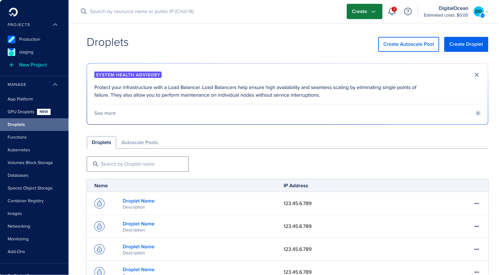

As users scale their cloud infrastructure, many struggle to understand when and how to optimize their resources, leading to inefficiencies, increased costs, and churn risk. A key challenge to help mitigate this was not just surfacing information, but determining what guidance to provide, when to provide it, and how to deliver it without overwhelming users.
I led the design of a behavior-driven system that delivered personalized, in-product recommendations based on user activity and infrastructure signals. This work included defining user segments, mapping growth-stage pain points, and designing both the experience and underlying orchestration logic to ensure relevance and avoid user fatigue.
In parallel, I helped establish a design framework for AI-driven and inference-based experiences across the platform, ensuring consistency as these systems scaled (see my Creating an AI Design Framework project). This work resulted in a 40% lift in resource creation among targeted users and laid the foundation for more intelligent, system-driven user guidance.
The first step of this project was to understand our target users better through data analysis. One challenge was determining how to categorize users to create more targeted and relevant experiences. To identify high-risk user segments, I partnered with an engineer to analyze behavioral patterns and infrastructure usage.
Once we identified a key segment of high-value users who were experiencing scaling challenges, I started doing my own qualitative research to better understand their needs, pain points they may run into while scaling their infrastructure, and what considerations they may be making. To accelerate my understanding of the technial aspects of building cloud infrastructure and common pain points, I supplemented my research with AI-assisted exploration and validated findings with my dev team to ensure that we were moving in the right direction. See a sample of this work here. Once this was complete, I started outlining a user journey that our target users may go through, including when and where their pain points are.

After we conducted our research, I recommended we create a system of personalized, behavior-driven nudges embedded within the product experience, supported by an orchestration layer that determined when, where, and how guidance should be delivered. As acting PM for this initiative, I was also responsible for writing up an initial PRD to guide the development of this feature in addition to my design work.
I wanted to integrate these smart nudges into the UI to feel seamless and not like a marketing message. To do this, I focused on the following:
- Delivering guidance at the point of need within existing workflows
- Providing actionable, step-by-step instructions rather than abstract suggestions
- Building trust through transparency (explaining why a recommendation was relevant) and only showing nudges that were truly in a user's best interest
This culminated in an expandable card design that integrated nudges into existing workflows and delivered actionable, step-by-step guidance at the point of need. Rather than feeling like external messaging, the goal was to build trust through relevance and clarity—helping users understand not just what to do, but why it mattered in their current context. While we had a very loose design style for these inference-based elements, there was no formal guidance in place for styling, components, or interaction patterns. This work directly informed a broader initiative to create a cohesive design framework for AI-driven experiences across the platform (see my Creating an AI Design Framework project to learn more).


Another consideration included in this work was how often users would encounter these nudges to ensure they were providing value without being intrusive. The aim was to build trust with users through targeted communication, not spam them with several nudges (past research on the effectiveness of banners, pop ups, and other marketing messages showed a strong case of user fatigue from overuse throughout the platform).

Besides these smart nudges, there was also an ongoing initiative within the company to create more inference based experiences throughout the platform via agents and other AI tools. How should smart nudges interact with other AI-driven experiences? As we continued to accelerate both the nudge and inference based user experiences, we needed to ensure a cohesive user experience for both styling and interactions. In order to do this, I created an outline for a nudge orchestration system that helped answer the following:
- When and where should we show a nudge?
- If users are eligible for more than one nudge, which one should we prioritize to show?
- How often should we show nudges?
- How long is the cool down period once a user interacted with a nudge?
After launching the nudge, we saw a +40% lift in resource creation for users that were shown the nudge compared to the control group. This work validated the effectiveness of behavior-driven guidance, but only scratched the surface. Future work would focus on expanding the system across additional user segments and platform surface areas, refining orchestration logic based on real-world usage, and further exploring where to integrate guidance into core workflows to create a more proactive and adaptive user experience.